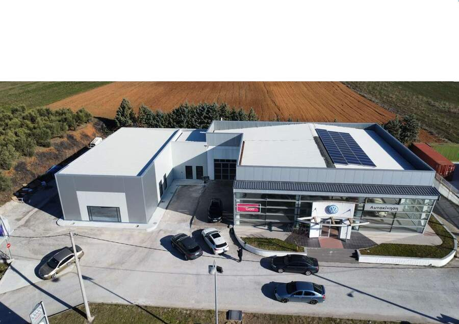

Καμπάνιες Ανάκλησης
Ελέγξτε αν υπάρχει ενεργή καμπάνια ανάκλησης για το αυτοκίνητό σας, μέσα από τις επίσημες σελίδες των εισαγωγέων.
Γιατί γίνονται οι καμπάνιες ανάκλησης
Οι κατασκευαστές παρακολουθούν συνεχώς τα αυτοκίνητά τους μετά την πώληση. Όταν διαπιστωθεί ένα ελάττωμα, μια απόκλιση από τις προδιαγραφές ή ένα θέμα ασφάλειας ή συμμόρφωσης με τη νομοθεσία, ο κατασκευαστής, σε συνεργασία με τις αρμόδιες αρχές, ανακαλεί τα οχήματα που αφορά ώστε το πρόβλημα να διορθωθεί.
Οι καμπάνιες ανάκλησης υπάρχουν για να προστατεύουν την ασφάλεια των επιβατών και των άλλων χρηστών του δρόμου, αλλά και για να διατηρείται το αυτοκίνητο σε σωστή και αξιόπιστη λειτουργία. Αφορούν συγκεκριμένες σειρές οχημάτων και όχι όλα τα αυτοκίνητα μιας μάρκας. Γι’ αυτό ο μόνος σίγουρος τρόπος είναι να ελέγξετε το δικό σας όχημα με τον αριθμό πλαισίου (VIN).
Η διόρθωση πραγματοποιείται από το εξουσιοδοτημένο συνεργείο της μάρκας και δεν επιβαρύνει τον ιδιοκτήτη. Επιλέξτε τη μάρκα του αυτοκινήτου σας παρακάτω: θα μεταφερθείτε στην επίσημη σελίδα του εισαγωγέα.
Επιλέξτε τη μάρκα σας
Ανακλήσεις και τεχνικές ενέργειες για τα Volkswagen, στην επίσημη σελίδα της Volkswagen Ελλάδος.
Ανακλήσεις και τεχνικές ενέργειες για τα ŠKODA, στην επίσημη σελίδα της ŠKODA Ελλάδος.
Τεχνικές ενέργειες για τα Chery, στην επίσημη σελίδα της Chery Ελλάδος, με έλεγχο μέσω αριθμού πλαισίου (VIN).
Οι σελίδες ανακλήσεων ανήκουν και συντηρούνται από τους επίσημους εισαγωγείς και ανοίγουν σε νέα καρτέλα. Αν βρείτε ενεργή καμπάνια για το αυτοκίνητό σας ή έχετε απορίες, καλέστε μας στο 23410 75330 για να κλείσετε ραντεβού στο εξουσιοδοτημένο συνεργείο μας στο Κιλκίς. Τον αριθμό πλαισίου (VIN) θα τον βρείτε στην άδεια κυκλοφορίας του οχήματος.